As India accelerates its battery energy storage systems (BESS) deployment — targeting 336 GWh of storage capacity by 2029–30 — fire safety compliance has emerged as one of the most critical regulatory obligations for project developers. The combination of lithium-ion chemistry, high energy density, and thermal runaway risk makes BESS installations inherently hazardous, placing them squarely under multiple fire safety regulations at the national and state level. This article provides a comprehensive guide to the fire safety approvals and No-Objection Certificates (NOCs) required for both the BESS manufacturing plant and the deployed containerized systems at project sites.
Why Fire Safety Is Non-Negotiable for BESS
Lithium-ion batteries can spontaneously ignite and burn at temperatures between 700°C and 1000°C, releasing dangerous off-gases that can trigger a flammable vapour cloud explosion (VCE) in enclosed spaces. Unlike conventional industrial fires, battery fires involve a self-sustaining electrochemical reaction known as thermal runaway, which can cascade across cells, modules, and racks with extreme speed. This risk profile places BESS installations in the same regulatory category as hazardous industries and flammable material storage facilities.
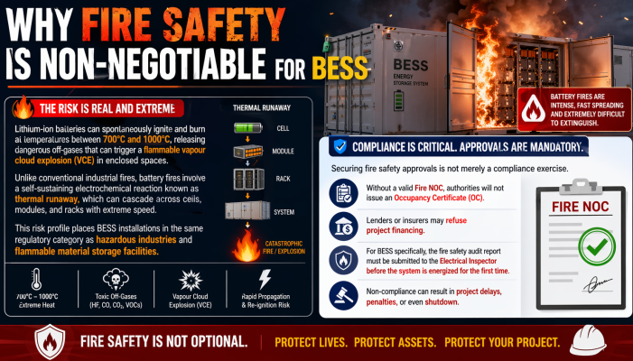
Securing fire safety approvals is not merely a compliance exercise. Without a valid Fire NOC, authorities will not issue an Occupancy Certificate (OC), and lenders or insurers may refuse project financing. For BESS specifically, the fire safety audit report must be submitted to the Electrical Inspector before the system is energized for the first time.
Part 1: Fire Safety Approvals for the BESS Manufacturing Plant
1.1 Provisional Fire NOC (Pre-Construction Stage)
Before ground is broken on any BESS manufacturing or assembly facility, the developer must obtain a Provisional Fire NOC from the State Fire Department. This is a pre-construction clearance that validates whether the proposed plant layout, construction materials, and firefighting plan conform to state fire safety norms and the National Building Code (NBC) of India.
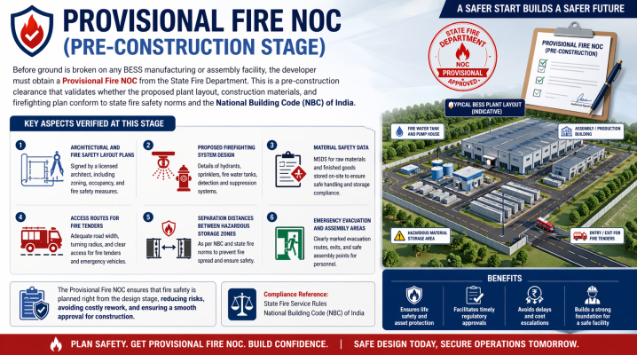
Key aspects verified at this stage include:
- Architectural and fire safety layout plans signed by a licensed architect
- Proposed firefighting system design (hydrants, sprinklers, suppression systems)
- Material safety data for raw materials and finished goods stored on-site
- Access routes for fire tenders and emergency vehicles
- Separation distances between hazardous storage zones and production areas
For BESS plants handling lithium-ion battery packs — which are classified as hazardous materials — many states, including Maharashtra, require a Fire NOC regardless of built-up area due to the flammable and reactive nature of the inventory.
1.2 Final Fire Safety Certificate (Pre-Occupancy Stage)
After construction is complete and all firefighting infrastructure is physically installed, the developer must apply for the Final Fire Safety Certificate (also called Final Fire NOC). State Fire Department officials conduct a physical site inspection covering:
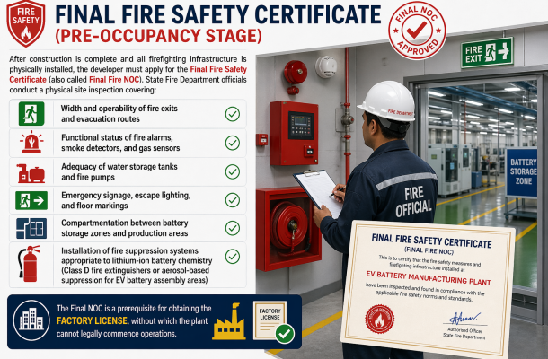
- Width and operability of fire exits and evacuation routes
- Functional status of fire alarms, smoke detectors, and gas sensors
- Adequacy of water storage tanks and fire pumps
- Emergency signage, escape lighting, and floor markings
- Compartmentation between battery storage zones and production areas
- Installation of fire suppression systems appropriate to lithium-ion battery chemistry (Class D fire extinguishers or aerosol-based suppression for EV battery assembly areas)
The Final NOC is a prerequisite for obtaining the Factory License, without which the plant cannot legally commence operations.
1.3 BIS Certification (IS 16270:2023)
Integral to plant operations, all BESS battery packs manufactured or assembled must undergo testing at BIS-recognized laboratories and obtain BIS Compulsory Registration Scheme (CRS) approval under IS 16270:2023. This is not a fire safety approval per se, but it is a pre-market safety certification that directly influences the fire risk profile of the product and is required before the plant's output can be legally sold or deployed.
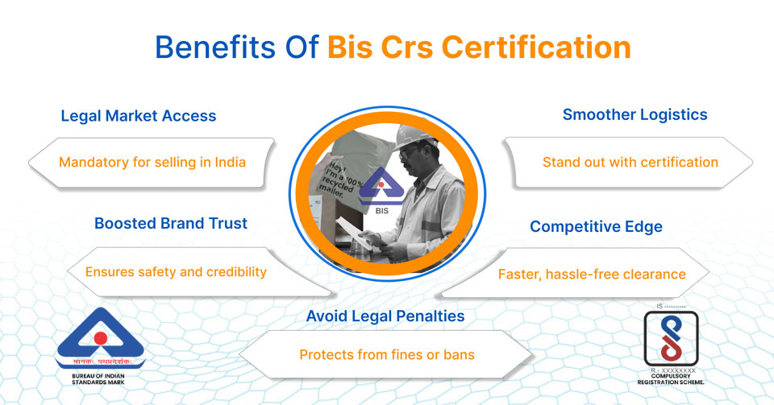
1.4 Documents Required for Plant-Level Fire NOC
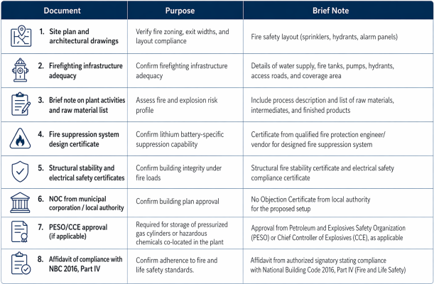
1.5 National Building Code 2016 – Part IV Compliance
The National Building Code (NBC) 2016, Part IV – Fire and Life Safety, published by the Bureau of Indian Standards (BIS), is the foundational document for fire safety compliance in India. Since 2017, the DGFSCDHG (Directorate General, Fire Services, Civil Defence & Home Guards) has directed all states to incorporate NBC Part IV into their local building bylaws, making it a mandatory standard. BESS plants must be designed and constructed in full conformance with NBC Part IV, specifically the provisions for hazardous industrial buildings (MFSS 9) and storage buildings (MFSS 8).
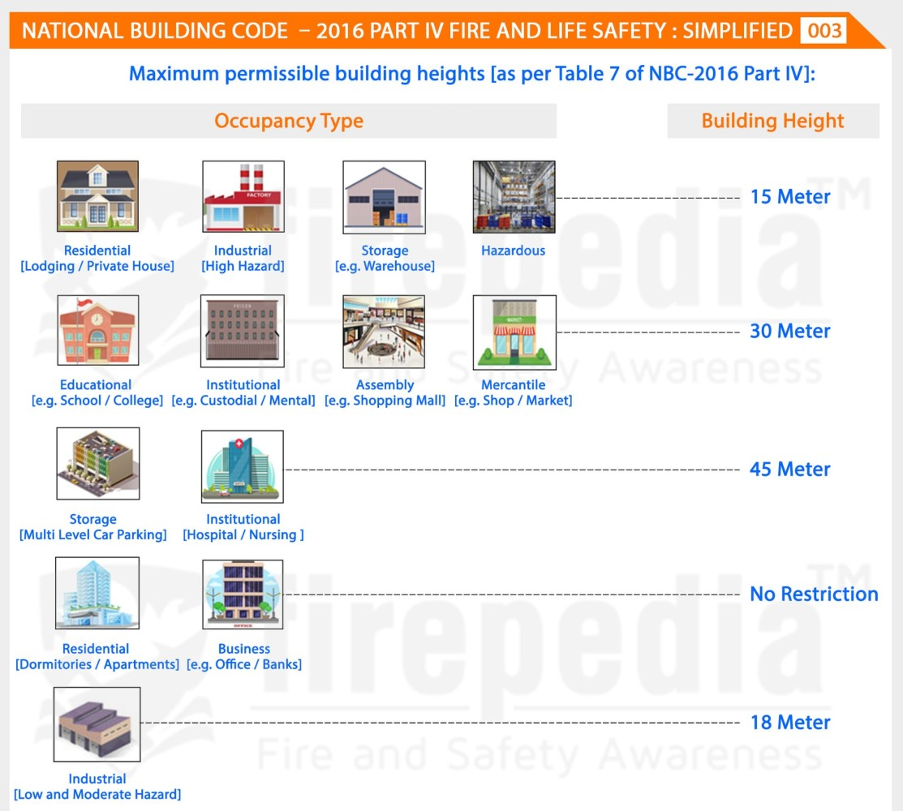
Part 2: Fire Safety Approvals for Deployed BESS Containers at Project Sites
Containerized BESS systems deployed at substations, renewable energy plants, or grid-tied locations carry a distinct and more complex set of fire safety requirements. These are governed by the newly notified CEA (Measures relating to Safety and Electric Supply) Amendment Regulations, 2026, which take effect from April 1, 2027.
2.1 State Fire Department NOC for the Deployment Site
At every project site where BESS containers are installed, the project owner must obtain a Site-Level Fire NOC from the respective State Fire Department. The application must demonstrate that the deployed layout, spacing, and suppression systems comply with fire safety norms. In Kerala, for instance, the BESS project specification explicitly requires that the fire hydrant system be installed with prior approval from the Kerala Fire Department before the BESS containers are energized.
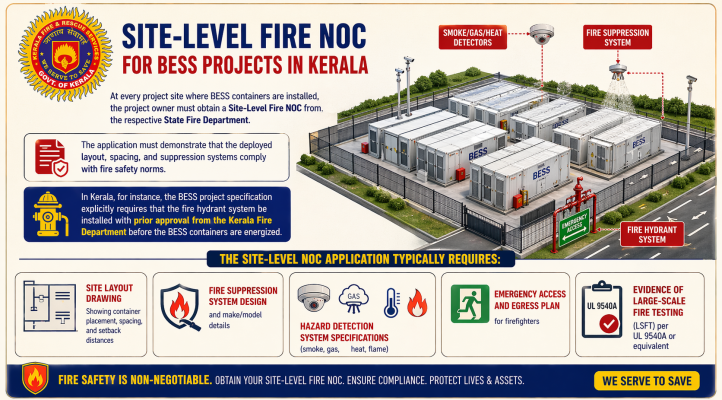
The site-level NOC application typically requires:
- Site layout drawing showing container placement, spacing, and setback distances
- Fire suppression system design and make/model details
- Hazard detection system specifications (smoke, gas, heat, flame)
- Emergency access and egress plan for firefighters
- Evidence of large-scale fire testing (LSFT) per UL 9540A or equivalent
2.2 CEA Chapter XA – Mandatory Fire Safety Requirements for Containers
Under the newly notified Chapter XA of the CEA Regulations 2026, the following fire safety measures are mandatory for all BESS containers connected at voltages above 650 V:
Container-Level Fire and Explosion Protection:
- Automatic fire suppression system inside every battery container
- Explosion-proof container design with forced ventilation and automated louvers for safe release of flammable gases.
- Hazard detection systems for smoke, gas, heat, and flame in all containers rated 200 kWh and above
- Minimum two-hour fire resistance rating for container walls
- A minimum 3-meter separation distance between adjacent containers, unless LSFT data permits a reduction
- A minimum 7.5-meter clearance between the BESS enclosure and exterior walls or roof overhangs of nearby structures
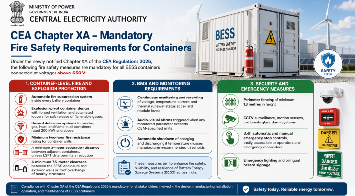
BMS and Monitoring Requirements:
- Continuous monitoring and recording of voltage, temperature, current, and thermal runaway status at cell and module levels
- Audio-visual alarms triggered when any monitored parameter exceeds OEM-specified limits
- Automatic shutdown of charging and discharging if temperature crosses manufacturer-recommended thresholds
Security and Emergency Measures:
- Perimeter fencing of minimum 1.8 metres in height
- CCTV surveillance, motion sensors, and break-glass alarm systems
- Both automatic and manual emergency stop controls, easily accessible to operators and emergency responders
- Emergency lighting and bilingual hazard signage
2.3 Independent Third-Party Fire Safety Audit (ITPFA)
This is the most critical new approval introduced by the CEA Regulations 2026. All BESS project owners must:
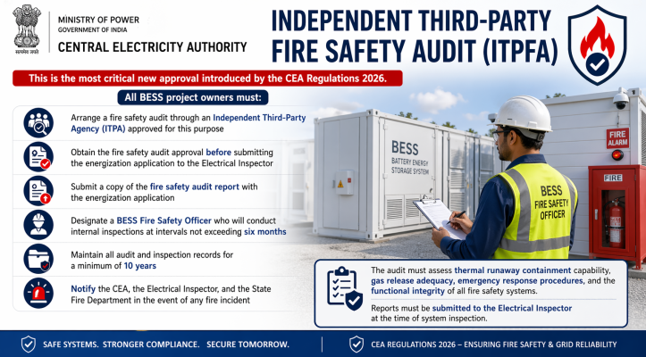
- Arrange a fire safety audit through an Independent Third-Party Agency (ITPA) approved for this purpose
- Obtain the fire safety audit approval before submitting the energization application to the Electrical Inspector
- Submit a copy of the fire safety audit report with the energization application
- Designate a BESS Fire Safety Officer who will conduct internal inspections at intervals not exceeding six months
- Maintain all audit and inspection records for a minimum of 10 years
- Notify the CEA, the Electrical Inspector, and the State Fire Department in the event of any fire incident
The audit must assess thermal runaway containment capability, gas release adequacy, emergency response procedures, and the functional integrity of all fire safety systems. Reports must be submitted to the Electrical Inspector at the time of system inspection.
2.4 Electrical Inspector Clearance under the Electricity Act, 2003
All new BESS electrical installations must be approved by the Electrical Inspector under Section 162 of the Electricity Act, 2003. The fire safety audit report is a mandatory submission at this stage. The Electrical Inspector verifies not only electrical safety but also that fire protection systems are installed and functional before granting permission for first-time energization.
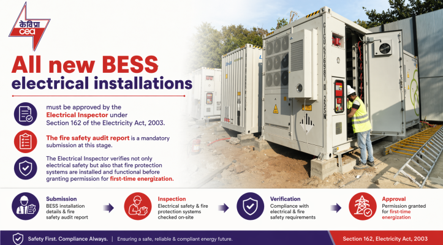
2.5 Large-Scale Fire Testing (LSFT) Certification
For any BESS container claiming a relaxation in spacing requirements (e.g., placing containers closer than 3 meters apart), the system must undergo Large-Scale Fire Testing (LSFT) per UL 9540A or an equivalent standard. LSFT verifies that a thermal runaway event in one battery unit does not propagate to adjacent units. This test result must be submitted to the project's Authority Having Jurisdiction (AHJ) — in India's context, the CEA and State Electrical Inspector — as part of the hazard mitigation analysis.
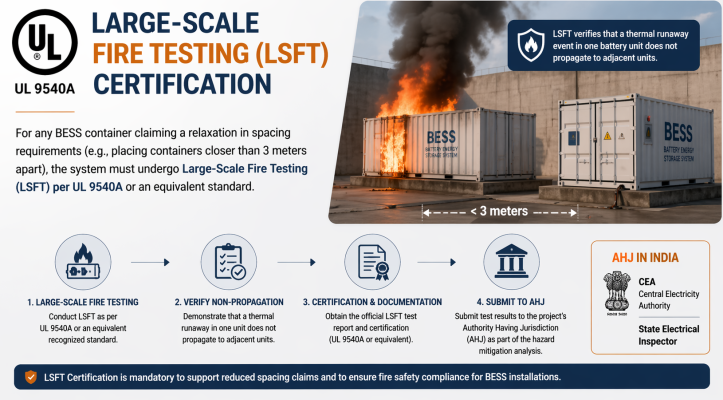
Part 3: Applicable Standards and Technical Codes
Compliance with the following standards is expected or mandated across the regulatory framework for BESS fire safety in India:
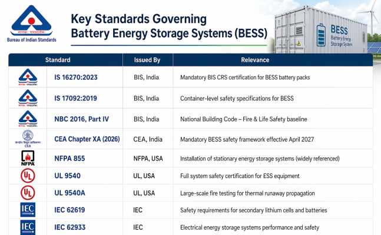
Part 4: Validity and Renewal of Fire NOCs
The validity of a Fire NOC for BESS installations is governed by state regulations. Since BESS installations qualify as hazardous industries with storage of hazardous materials (lithium-ion batteries), they attract stricter validity conditions:
- Kerala: Fire NOC validity limited to 2 years for hazardous industries and storage of hazardous materials, subject to payment of twice the annual fee.
- Goa: NOCs extended to 5 years with mandatory annual self-declaration of system functionality; designated fire department officers can inspect at any time.
- General (commercial/industrial): Valid for 1 to 3 years in most states, requiring renewal with re-inspection.
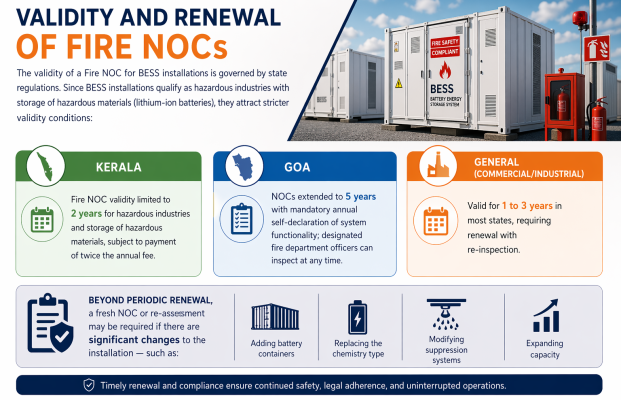
Beyond periodic renewal, a fresh NOC or re-assessment may be required if there are significant changes to the installation — such as adding battery containers, replacing the chemistry type, modifying suppression systems, or expanding capacity.
Part 5: The Approval Sequence – A Process Flowchart
Developers should follow this sequence to avoid delays:
- Pre-construction (Plant): Obtain Provisional Fire NOC → Begin construction
- Pre-occupancy (Plant): Pass physical fire inspection → Obtain Final Fire Safety Certificate → Obtain Factory License
- Pre-deployment (Site): Submit container fire safety plan → Obtain site-level State Fire Department NOC
- Pre-energization (Site): Commission BESS → Complete third-party fire safety audit (ITPA) → Submit audit report to Electrical Inspector → Obtain Electrical Inspector Clearance → Energize the system
- Post-energization (Ongoing): BESS Fire Safety Officer conducts 6-monthly inspections → Renew Fire NOC periodically → Maintain records for 10 years → Notify authorities in case of any fire incident.
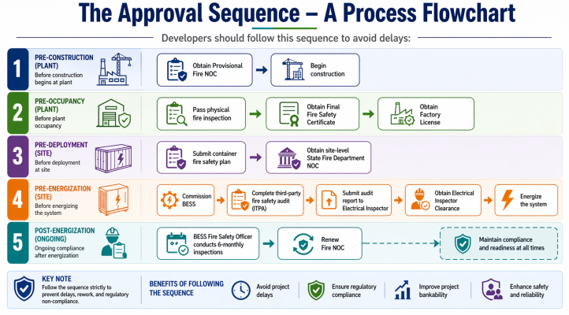
Part 6: Key Regulatory Agencies to Engage
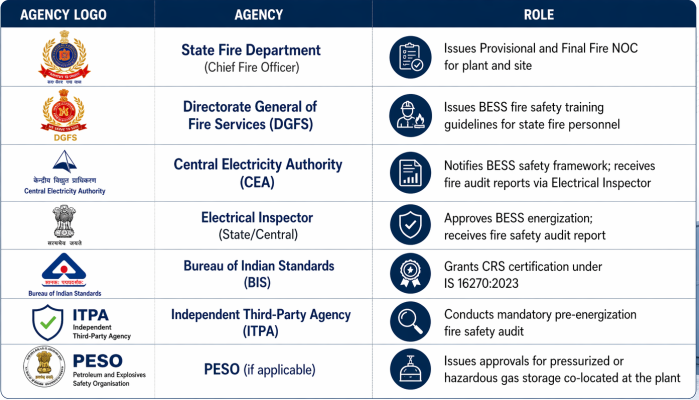
Conclusion
India's BESS fire safety approval landscape has undergone a decisive transformation with the CEA Amendment Regulations, 2026 (Chapter XA), which will be enforceable from April 1, 2027. For project developers and BESS manufacturers, this means a layered compliance journey: the manufacturing plant requires a Factory-level Fire NOC under state fire rules and NBC 2016 Part IV, while every deployed containerized system requires site-level Fire NOC, container-level fire system installations, and a mandatory independent third-party fire safety audit before first energization.
The regulatory intent is clear: as India scales from gigawatt-hours to terawatt-hours of BESS deployment, fire safety cannot be an afterthought. Proactive engagement with state fire departments, early commissioning of BIS-compliant fire suppression systems, and maintaining a dedicated BESS Fire Safety Officer will be the hallmarks of compliant, financeable, and insurable BESS projects in India.